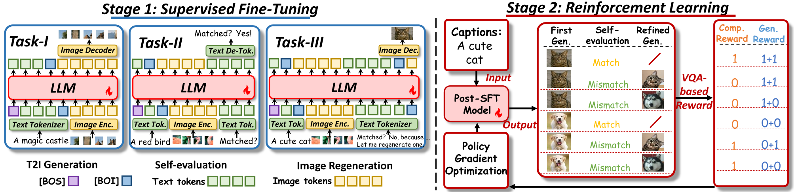

Janus-Pro-R1
Janus-Pro-R1
Unlocking Aha Moments via Reinforcement Learning: Advancing Collaborative Visual Comprehension and Generation
Introduction
Recent endeavors in Multimodal Large Language Models (MLLMs) aim to unify visual comprehension and generation. However, these two capabilities remain largely independent, as if they are two separate functions encapsulated within the same model. Consequently, visual comprehension does not enhance visual generation, and the reasoning mechanisms of LLMs have not been fully integrated to revolutionize image generation. In this paper, we propose to enable the collaborative co-evolution of visual comprehension and generation, advancing image generation into an iterative introspective process. We introduce a two-stage training approach: supervised fine-tuning teaches the MLLM with the foundational ability to generate genuine CoT for visual generation, while reinforcement learning activates its full potential via an exploration-exploitation trade-off. Ultimately, we develop Janus-Pro-R1, unlocking the Aha moment in visual generation, advancing MLLMs from text-to-image tasks to unified image generation. Extensive experiments demonstrate that our model not only excels in text-to-image generation and image editing, but also functions as a superior image semantic evaluator with enhanced visual comprehension capabilities.
framework
Benefits after Collaborating Visual Comprehension and Generation

If we can synergize visual comprehension and generation within MLLMs, incorporating the reasoning mechanisms into visual generationthe, MLLM can seamlessly combine and switch between its comprehension and generation capabilities. It will bring about three revolutionary benefits for image generation:
(1) Genuine Chain-of-Thought (CoT): A genuine CoT in MLLMs should be self-driven by the model's deep thinking within a unified next-token prediction framework based on the causal dependency of tokens. The visual comprehension and generation capabilities are naturally linked to form a interleaved text-image reasoning chain under the spontaneous scheduling of the MLLM, which can be treated as a CoT that truly helps produce more refined images.
(2) Unlocking Aha Moments: Genuine self-driven CoT further endows MLLMs with the ability of self-correction, unlocking the Aha Moments. After generating the initial image, the MLLM leverages its comprehension capability to reflect on the current generation. Once errors are detected, it re-engages its visual generation capabilities to re-produce images that better meet user requirements.
(3) Enabling Unified Image Generation: The emergent of the above two benefits signifies that the model can effectively collaborate its visual comprehension and generative abilities. This not only enhances its performance in text-to-image tasks, but also enables flexible unified image generation for any complex situational purposes, such as image editing.
(4) Mutual Benefits: the collaboration between visual comprehension and generation should yield mutual benefits. This means that as visual comprehension evolves the capabilities of visual generation, it also enhances its own performance in the process.
Two-Stage Training Paradigm
We propose a two-stage training paradigm to enable introspective text-to-image generation via genuine reasoning chains (CoT), unlocking what we call Aha Moments in visual generation:
Stage 1 – Supervised Fine-Tuning (SFT): We employ SFT to endow MLLMs with the foundational ability to construct a genuine reasoning chain for visual generation that triggers Aha moments To achieve this, we break down the visual generation CoT into several sub-skills with a mixed training approach: (a) Text-to-image generation; (b) Image-text consistency self-evaluation; (c) Image regeneration through reflection.
Stage 2 – Reinforcement Learning (RL): we treat image generation as a long token-level Markov decision process and perform reinforcement learning based on GRPO algorithm Without any ground-truth images, we encourage the model to spontaneously collaborate its comprehension and generation capabilities for introspective text-to-image generation, also designing a bi-level QA-based reward function for optimization. I This approach equips the model with self-reflective capabilities, advancing from simple text-to-image synthesis to iterative introspective image generation.
Main Results
Automated Metric Evaluation
We employ Janus-Pro-7B as the backbone, developing Janus-Pro-R1 after employing the two-stage training paradigm. we
first conduct an automated metric evaluation on 3 text-to-image benchmarks: GenEval, T2ICompBench, and DPG-Bench. As shown in the following table, Janus-Pro-R1-7B surpasses other diffusion-based and MLLM-based baselines.
Qualitative Examples on T2I
we present qualitative examples of Janus-Pro-R1 to trigger Aha moments within its reasoning chains to generate superior images.
The model could leverages its visual comprehension capabilities to accurately identify the issues in its initially-generated images, then unleashing the visual generation capabilities to output a more accurate image.
Even if the newly generated image still fails to meet the requirements, the model can trigger a second Aha moment, re-evaluating the issues and repeat the visual generation to produce a fully compliant image..
We find that this strong self-reflection ability is more derived from the enhancement of RL. We refer to the model after SFT as Janus-Pro-SFT. We further present cases of counterfactual generation to highlight the differences between Janus-Pro-SFT and Janus-Pro-R1. When given counterfactual prompts such as ''a square apple'', both models initially generate images that do not align with the prompt due to ingrained common-sense. However, Janus-Pro-SFT deems the initial image reasonable as the final output.
In contrast, Janus-Pro-R1 identifies the semantic mismatches in the initial image and regenerate a new one that meets the requirements.
We further presents a direct qualitative comparison between Janus-Pro-7B and our Janus-Pro-R1-7B on the final generated images, with both short and long captions. It can be observed that compared to Janus-Pro-7B, after unlocking the Aha moments with CoT via a two-stage training paradigm, our model not only generates images that are more semantically aligned with the text but also achieves higher aesthetic quality.

Qualitative Examples on Image Editing
We also conduct a qualitative comparison with both some leading works on multi-turn editing. Our model supports a wide range of editing operations, with the output images consistently resembling the source images while remaining coherent with the instructions.

Discussion
(1) SFT Memorizes, RL Generalizes:
SFT tends to enable the model to imitate and memorize some sub-skills to develop the visual generation CoT, lacking the ability of generalization. Of course, SFT is still essential, as it serves the role as cold-start and provides the foundation for the MLLM to explore reliable visual generation CoTs. In contrast, RL enhances generalization, significantly improving both the quality of the generated images and ensuring that the introspection process is genuinely effective. And it advances the original imitative behavior after SFT to genuine reasoning, thereby better avoiding the generation of hallucinations.
(2) RL Paves the Way for Genuine Unified Visual Comprehension and Generation:
The essence of unification between visual comprehension and generation should be reflected in the synergistic enhancement between the two capabilities, such as comprehension and generation improving each other through collaborative efforts.
We observe that although we can endow models with the foundational ability to collaborate on visual comprehension and generation through SFT, the model appears to merely mechanically mimic and combine these two skills. The combination does not bring about any substantial improvement to either capability. However, through RL, we encourage the model to spontaneously integrate the two capabilities to explore reasoning pathways, and merely provide incentives as appropriate guidance. We find that the model learns how to better coordinate these two capabilities, resulting in stronger text-to-image generation and image semantic understanding abilities.
Therefore, we argue that RL holds the potential to unlock genuine unified visual comprehension and generation. Given adequate computational resources, we think that large-scale RL could feasibly be employed to achieve a synergistic enhancement of visual comprehension and generation for the genuine unification.
BibTeX